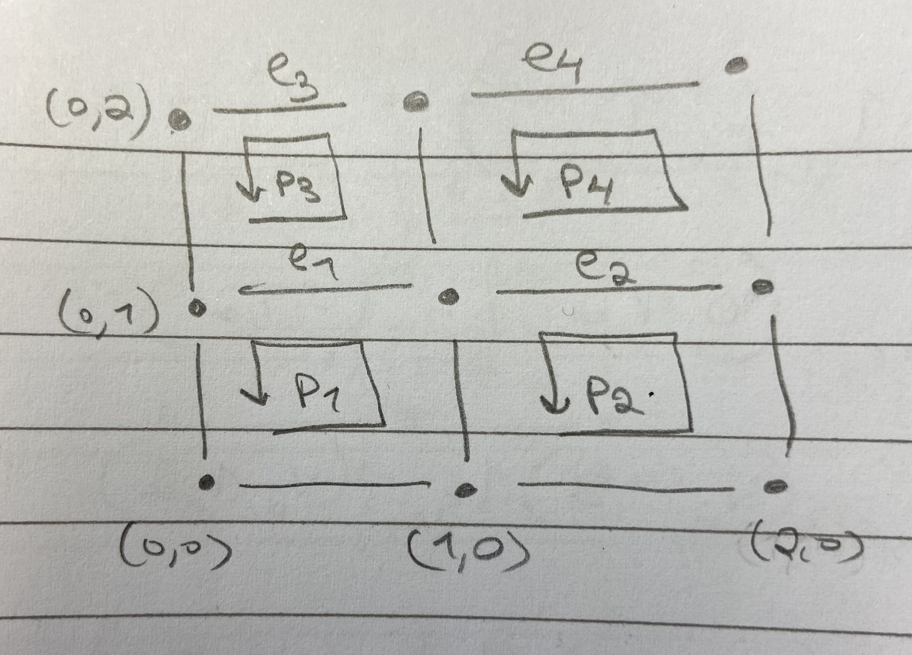

Yang-Mills Lattice Gauge Theory - William’s Explorations
February 20, 2026
Notes on Chatterjee Leading Term paper
I want to compute the matrix of the form \(M_n^0\) in some simple cases. Note that \(M_n^0: \mathbb R^{E_n^1} \times \mathbb R^{E_n^1} \to \mathbb R\), and the matrix to \(M_n^0\), denote it \(l_n^0\), satisfies \(l_n^0 : E_n^1 \times E_n^1 \to \mathbb R.\) Note that this is a slightly ambiguous definition of a matrix because we haven’t defined an ordering on the edges. This will become important for defining a determinant of \(l_n^0\). Furthermore, the matrix to the form satisfies \[l_n^0(e_i, e_j) = M_n^0(1_{e_i}, 1_{e_j}),\] where \(1_{e_j} : E_n^1 \to \mathbb R\) is given by \[ 1_{e_j}(e) = \begin{cases} 1 & \text{if }e = e_j\\ 0 & \text{if }e \ne e_j \end{cases} \] for all \(e \in E_n^1\). Recall also that \[M_n^0(t,s) = \sum_{p \in \mathcal{P}} t(p) s(p)\] for \((t,s) \in \mathbb R^{E_n^1} \times \mathbb R^{E_n^1}\), where \(t(p) = t(p^{1}) + t(p^{2}) - t(p^{3}) - t(p^{4})\), where \(p\) is a plaquette and \(p^i\) are the positively oriented edges comprising the plaquette. Note also that \(M_n^0\) is symmetric: \[ M_n^0(t,s) = M_n^0(s,t). \]
When \(n=4\), the matrix to \(M_4^0\) is a \(9\) by \(9\) matrix because there are \(9\) edges in \(E_4^1\). When \(n=3\), the matrix to \(M_3^0\) is a \(4\) by \(4\) matrix because there are \(4\) edges in \(E_3^1\). In this case, by symmetry, we need to compute \(10\) entries of a \(16\) entry matrix.
Thus, let’s compute \(l_3^0\). So we consider the box \(B_3\). Let \[e_1 = ((0,1),(1,1))\] \[e_2 = ((1,1),(2,1))\] \[e_3 = ((0,2),(1,2))\] \[e_4 = ((1,2),(2,2))\] be shorthand notation for the edges in \(E_3^1\). The plaquettes are \[p_1 = ((0,0), 1,2)\] \[p_2 = ((1,0), 1,2)\] \[p_3 = ((0,1), 1,2)\] and \[p_4 = ((1,1), 1,2).\]

Then \[ l_3^0 = \begin{bmatrix} 2 & 0 & -1 & 0 \\ 0 & 2 & 0 & -1 \\ -1 & 0 & 1 & 0 \\ 0 & -1 & 0 & 1 \\ \end{bmatrix} \] where row \(i\) and column \(j\) has \(l_3^0(e_i,e_j)\), which was an arbitrary way to arrange the matrix, based on the choice of the shorthand notation for the edges in \(E_3^1\).
As an example computation, we have \[\begin{align*} l_3^0(e_1, e_1) &= M_n^0(1_{e_1},1_{e_1})\\ &= 1_{e_1}(p_1)1_{e_1}(p_1) + \cdots + 1_{e_1}(p_4)1_{e_1}(p_4)\\ &= (-1)(-1) + (0)(0) + (1)(1) + (0)(0)\\ &= 2. \end{align*}\]
It is interesting how the edges \(e_3\) and \(e_4\) on the boundary only have one plaquette that gives a non-zero term, where the edges \(e_1\) and \(e_2\) which are in the interior of the box, have two plaquettes, \(p_1\) and \(p_3\), and \(p_2\) and \(p_4\), respectively, whcih give a non-zero term in the quadratic form on the diagonal.
February 12, 2026
For \(x \in (-1,1)\), we know that \[ \log(1-x) = - \sum_{i=1}^{\infty} \frac{c^i}{i}. \]
Also, in functional analysis, bounded operators from one Hilbert space to another can be viewed as points in a Banach space.
Using this abstraction, would we define, treating \(L: \mathcal{H} \to \mathcal{H}\) like \(x\) as above,
for \(\lVert L \rVert_{op} \in (-1,1)\), the following? \[
\log(1-L) = - \sum_{i=1}^{\infty} \frac{L^i}{i}
\]
Or more useful could be the following. For \(c \in (0,2)\) we know that \[ \log(c) = -\sum_{i=1}^{\infty} \frac{(1-c)^i}{i} = \sum_{i=1}^{\infty} (-1)^{i+1} \frac{(c-1)^i}{i}, \] so would we then define for \(\lVert L \rVert_{op} \in (0,2)\), that \[ \log(L) = \sum_{i=1}^{\infty} \frac{(-1)^{i+1}}{i} (L-I)^i, \] where \(I\) denotes the identity operator?
February 8, 2026
The following post is regarding Brennecke (2026).
In (3.14), we have for \(f \in S(\mathbb R^4)\) that \[ \phi(f) = \sqrt{2 \pi} \int_{S_m^+} \lambda_m(dp) \tilde{f}(p) a_p + h.c. \] Straying slightly from the exact formulation (2.21), which is over \(\mathbb R^4\) instead of the mass shell, let us identify \[ a(g) = \int_{S_m^+} \lambda_m(dp) \overline{g}(p) a_p. \] This suggests to write, \[ \phi(f) = a(\sqrt{2 \pi} \overline{\tilde{f}(\cdot)}) + h.c. \] But then the issue is that \(\sqrt{2 \pi} \overline{\tilde{f}(\cdot)}\) is a Schwartz function on \(\mathbb R^4\), and in this setting, we want annihilation operators to be defined by \(L^2(S_m^+)\) functions.
Does it work to simply write (?): \[ \phi(f) = a(\sqrt{2 \pi} \overline{\tilde{f}(\cdot)}|_{S_m^+}) + h.c. \] where \(\sqrt{2 \pi} \overline{\tilde{f}(\cdot)}|_{S_m^+}\) denotes the restriction to \(S_m^+\)?
February 4, 2026
In this section I want collect short summaries of ideas and arguments from the Wightman axioms. I’ll just write a bunch of short little paragraphs. I want to be tolerant of mistakes. In particular, I want to make mistakes and not over-verify that things are correct.
Let me start with the state transformation law for the Wightman axioms. The main idea is that you collect a Hilbert space \(\mathcal{H}\), a representation \(U\) of the covering group of the Poincaré group, and a vacuum state \(\Omega\). But the mathematically demanding part is to invoke self-adjoint operator theory to obtain the 4-momentum \(P\), and to use ideas from special relativity to
One establishes a Hilbert space of states \(\mathbb H\). Then the state transformation law with regards to change of reference frames is given WLOG by an ordinary representation of the inhomogeneous \(SL(2, \mathbb C)\). So we can just write \(U(a,L(A))\) for \((a,A)\) in the covering space.
We can obtain one coordinate of the 4 momentum \(P\) by partial diffentiating the strongly continuous family of unitary operators \(U(a,L(1_{\mathbb C^{2 \times 2}}))_{a \in \mathbb R^4}\) at \((0,0,0,0)\) and multiplying by \(i\).
Notes:
- Note that for lifing the representation \(U(\cdot, \cdot)\) of \(\mathcal{P_+^\uparrow}\) to the cover \(\mathbb R^4 \rtimes SL(2, \mathbb C)\) with the covering map \(L: SL(2, \mathbb C) \to \mathcal{L}_+^{\uparrow}\), I can just think of the equation \[ U(a,(\cdot)) \circ L(\cdot) = \tilde{U}(a,(\cdot)) \] on the covering space \(SL(2,\mathbb C)\).
- To see the difference between direct product and tensor product, form a basis of \(\mathbb R^2 \oplus \mathbb R^3\) by concatenation, but form a basis of \(\mathbb R^2 \otimes \mathbb R^3\) by forming all combinations of elementary elements \(e_i \otimes e_j\) for \(i \in \{1,2\}\) and \(j \in \{1,2,3\}\).
February 2, 2026
Here is a list of “high-level” questions that will guide me as I try to learn the contents of Brennecke (2026).
Questions:
How is the analytic structure of the Poincaré group or its covering group used? Does this relate to the Laplace transform?
What is known about the Laplace transform?
What is the connection between the Laplace transform and Wightman functions? Can I write down a rigorous statement that frames Wightman functions as boundary values of holomorphic functions, and relate this to the Laplace transform?
Why is a Haar measure needed in section 3.2?
Is it true that I can safely ignore the unitarian trick in Section 1.2?
Can I state a precise definition of the covering group of the Poincaré group together with group laws, and say how one lifts projective representations of the Poincaré group to unitary representations of its covering group?
Some sections describe explicit formulas for representations of the Poincaré group on the space of wave functions. See Section 3.1 for example. Is there some result that says whether these formulas are canonical or general?
At some point, Brennecke said that we have classified all finite dimensional irreducible representations of \(X\) group on \(Y\) vector space. What are \(X\) and \(Y\)? What is the precise result or statement? Is this connected somehow to the transformation behavior Wightman axiom or the regularity of the field Wightman axiom?
What are some of the basic definitions involving spin? For instance, recall \(\prod\), \(S\), etc.
What is the role of the parity operator? What even is it?
Is there a bridge between the following three lands: the land of distribution theory, the land of operator theory (Fock space, spectral theorem, quantum mechanics, quantization, unitary dynamics), and representation theory?
Answer to Question 1
It seems the analytic structure of the covering group of the Poincaré group is used in the proof of Lemma 3.11. Basically, one analyzes the Lie algebra of \(SL(2, \mathbb C)\) in order to find finite dimensional irreducible representations of \(SL(2,\mathbb C),\) but one needs an extra lemma regarding a local diffeomorphism property of an exponential map from Lie algebra to Lie group, which requires a smooth structure on \(SL(2, \mathbb C)\) (the Lie group in this case).
Such an analytic structure does not appear to be related to the Laplace transform or any of its related support requirements in QFT.